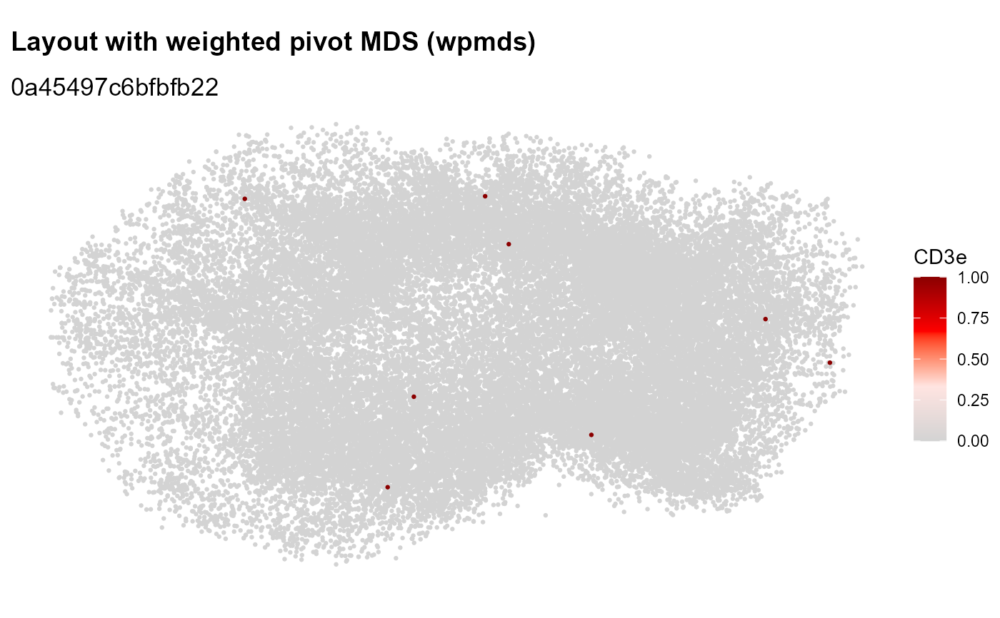
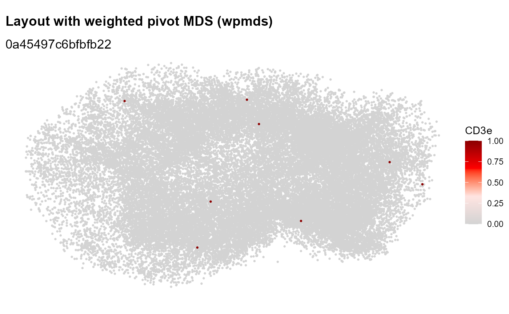

Plot 2D graph layouts
Plot2DGraph.RdPlot 2D component graph layouts computed with ComputeLayout and
optionally color nodes by certain attributes. Edges can also be visualized
by setting map_edges; however, since component graphs tend to be very
large, this can take a long time to draw.
Usage
Plot2DGraph(
object,
cells,
marker = NULL,
assay = NULL,
layout_method = c("wpmds_3d", "pmds_3d", "wpmds", "pmds"),
colors = c("lightgrey", "mistyrose", "red", "darkred"),
map_nodes = TRUE,
map_edges = FALSE,
log_scale = TRUE,
node_size = 0.5,
edge_width = 0.3,
show_Bnodes = TRUE,
collect_scales = FALSE,
return_plot_list = FALSE,
...
)Arguments
- object
A
Seuratobject- cells
A character vector with cell IDs
- marker
Name of a marker to colors nodes/edges by
- assay
Name of assay to pull data from
- layout_method
Select appropriate layout previously computed with
ComputeLayout- colors
A character vector of colors to color marker counts by
- map_nodes, map_edges
Should nodes and/or edges be mapped? Note that component graphs can have >100k edges which can be very slow to draw.
- log_scale
Convert node counts to log-scale with
log1p. This parameter is ignored for PNA graphs.- node_size
Size of nodes
- edge_width
Set the width of the edges if
map_edges = TRUE- show_Bnodes
Should B nodes be included in the visualization? This option is only applicable to bipartite MPX graphs. Note that by removing the B nodes, all edges are removed from the graph and hence,
map_edgeswill have no effect.- collect_scales
Collect color scales so that their limits are the same. This can be used to make sure that the colors are comparable across markers.
- return_plot_list
Instead of collecting the plots in a grid, return a list of
ggplotobjects.- ...
Not yet implemented
Examples
library(pixelatorR)
# MPX
pxl_file <- minimal_mpx_pxl_file()
seur <- ReadMPX_Seurat(pxl_file)
#> ✔ Created a 'Seurat' object with 5 cells and 80 targeted surface proteins
seur <- LoadCellGraphs(seur, load_as = "Anode")
#> → Loading CellGraphs for 5 cells from sample 1
#> ✔ Successfully loaded 5 CellGraph object(s).
seur <- ComputeLayout(seur, layout_method = "pmds", dim = 2)
#> ℹ Computing layouts for 5 graphs
Plot2DGraph(seur, cells = colnames(seur)[1], layout_method = "pmds", marker = "CD3E")
 # PNA
pxl_file <- minimal_pna_pxl_file()
seur <- ReadPNA_Seurat(pxl_file)
#> ✔ Created a <Seurat> object with 5 cells and 158 targeted surface proteins
seur <- LoadCellGraphs(seur, cells = colnames(seur)[1], add_layouts = TRUE)
#> ℹ Fetching edgelists for 1 cells
#> → Creating <CellGraph> objects
#> → Fetching marker counts
#> → Adding marker counts to <CellGraph> object(s)
#> → Fetching layouts
#> → Adding layouts to <CellGraph> object(s)
#> ✔ Successfully loaded 1 <CellGraph> object(s).
Plot2DGraph(seur, cells = colnames(seur)[1], marker = "CD3e")

# PNA
pxl_file <- minimal_pna_pxl_file()
seur <- ReadPNA_Seurat(pxl_file)
#> ✔ Created a <Seurat> object with 5 cells and 158 targeted surface proteins
seur <- LoadCellGraphs(seur, cells = colnames(seur)[1], add_layouts = TRUE)
#> ℹ Fetching edgelists for 1 cells
#> → Creating <CellGraph> objects
#> → Fetching marker counts
#> → Adding marker counts to <CellGraph> object(s)
#> → Fetching layouts
#> → Adding layouts to <CellGraph> object(s)
#> ✔ Successfully loaded 1 <CellGraph> object(s).
Plot2DGraph(seur, cells = colnames(seur)[1], marker = "CD3e")
